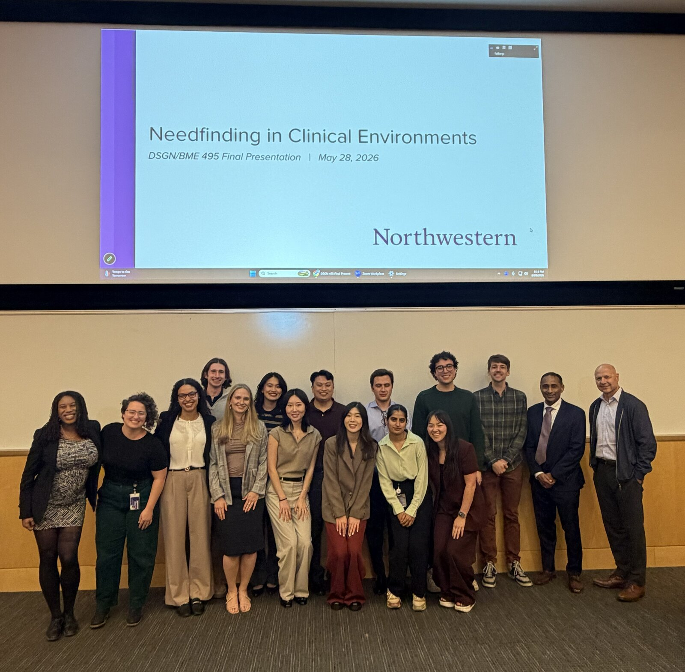

Needfinding in Clinical Environments
Partnering with: Northwestern Medicine
Esophageal Adenocarcinoma, or Esophageal cancer (EAC), is deadly when caught late but highly survivable when caught early. Despite this, very few cases are currently caught early.
Northwestern Medicine, in an effort led by Dr. Sri Komanduri, partnered with Northwestern's EDI and Biomedical graduate programs to further their understanding of the issue. We spent the quarter interviewing stakeholders, observing a high-risk GI clinic, and conducting secondary research to define where the opportunities were to increase the denominator: finding more of the high-risk patients who currently go unidentified.
Our Ability to Treat is Greater than our Ability to Identify Patients
Before we could understand how to identify these patients, we had to understand where they were being lost. To do that, we created the “leaky funnel,” which maps a patient’s journey and the points where they might drop out of the system.
Opportunity Landscape
The eleven opportunities the class found within this funnel can be seen on the opportunity landscape chart – plotted by impact and difficulty of implementation. I surfaced Opportunity 9, Building Clinical Clarity and Capacity, where I examined “who owns what” within the clinic to understand how the clinic’s role definitions were impacting the patient experience.
Building Clinical Clarity and Capacity
What I found was that Advanced Practice Providers (APPs) are stretched across many roles within the high-risk clinic without ownership of their most critical task. Onsite, we observed APPs struggling to recall procedural steps after long gaps between performing them, and in interviews heard that there wasn’t enough time to pre-chart every patient. We dug into why.
Responsibilities Matrix – Who Owns What
Context Switching
APP responsibilities are scattered across the patient journey, forcing constant context switching. Pre-charting isn't built into their schedule, so as patient volume grows, it's often the first thing skipped.
Lack of Ownership
APPs lack ownership of their most critical task, performing the procedure itself. The attending must be in the room every time, which caps how many procedures the clinic can run in a day.
Closing the Loop
What we found is that without a clearer scope of practice for APPs, supported by the right tools, the clinic couldn't handle a higher patient volume. Even if every upstream issue in the funnel were resolved, this bottleneck would still cap how many high-risk patients could be found and treated. Acting on Opportunity 9, alongside the other ten throughout the patient's journey, is what it takes to increase the denominator. We presented these findings to Dr. Komanduri and other key stakeholders to help set that work in motion.
